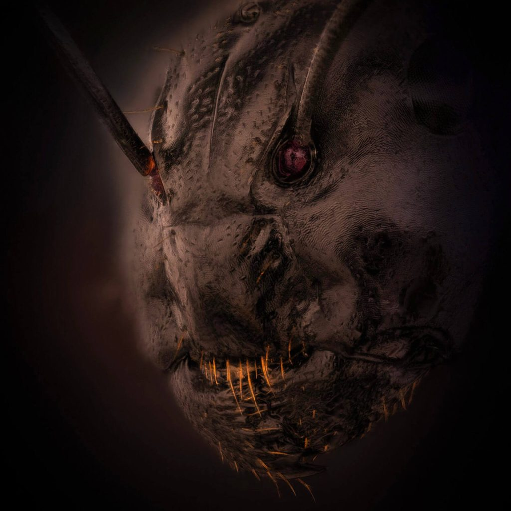
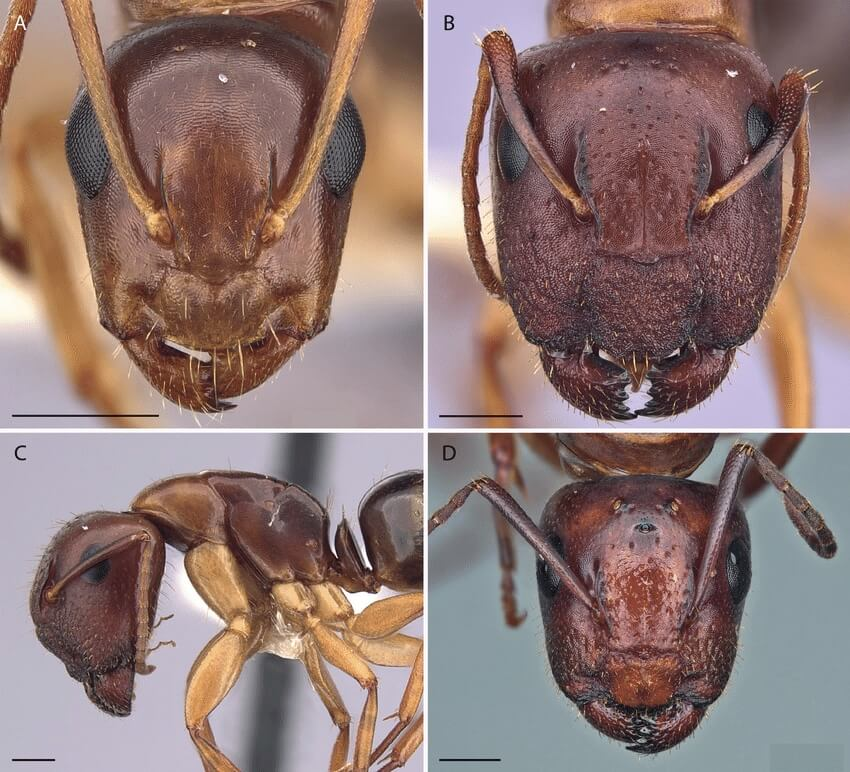
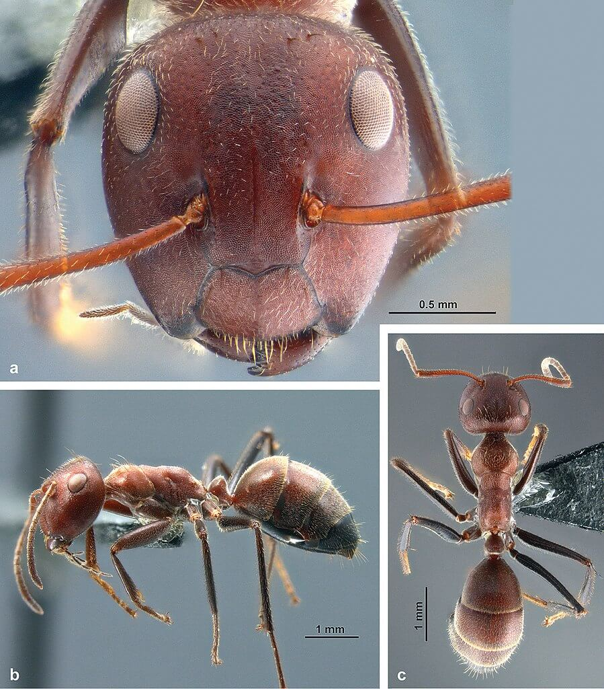

ဒီ ဓါတ်ပုံဟာ ၂၀၂၂ ခုနှစ်က Nikon ကင်မရာ ကုမ္ပဏီက ပြုလုပ်ခဲ့တဲ့ Nikon’s Small World Photomicrography Competition 2022 အတွက် တင်တွင်းခဲ့တဲ့ ပြိုင်ပွဲဝင် ဓါတ်ပုံလဲ ဖြစ်ပါတယ်။ ဒီ ဓါတ်ပုံပြိုင်ပွဲဟာ အဏုစိတ် မှန်ဘီလူး အသုံးပြု ရိုက်ကူးတဲ့ Macrophotography ဓါတ်ပုံတွေကို ယှဉ်ပြိုင်တဲ့ ပြိုင်ပွဲ ဖြစ်ပါတယ်။
ဒီဓါတ်ပုံကို လစ်သူယေးနီးယား နိုင်ငံက ဓါတ်ပုံဆရာ Eugenijus Kavaliauskas က ရိုက်ကူးခဲ့တာ ဖြစ်ပါတယ်။ Ant (Camponotus) လို့ အမည်ပေးထားတဲ့ ဒီဓါတ်ပုံကို stereo 10x microscope အဏုကြည့် မှန်ပြောင်းအောက်မှာ အဆ ၅ ဆ ချဲ့ပြီး ရိုက်ကူးထားတာ ဖြစ်ပါတယ်။

အောက်မှာ ဒီ ပုရွက်ဆိတ်နဲ့ အမျိုးအနွယ် တူ Camponotus yogi ပုရွက်ဆိတ်ရဲ့ အနီးကပ် မျက်နှာကို ရိုက်ကူးထားပြီး သိပ္ပံ သုတေသန ဂျာနယ် တစ်စောင်မှာ တင်ပြထားတဲ့ ဓါတ်ပုံတွေနဲ့ နှိုင်းယှဉ် လေ့လာ ကြည့်နိုင်ပါတယ်။ ဒီပုံနှစ်ခုကို သေသေချာချာ နှိုင်းယှဉ် ကြည့်ရင် အတော်လေး နီးနီးစပ်စပ် တူညီနေတာကို တွေ့ကြရမှာ ဖြစ်ပါတယ်။ (ပြိုင်ပွဲဝင် ပုံကတော့ ကြောက်စရာ ဖြစ်အောင် အလင်းအမှောင်တွေ ဖိုတိုရှော့မှာ ပြင်ထားမှာ ပေါ့ဗျာ။)

ပုရွက်ဆိတ် တွေဟာ ဒီပုံတစ်ခုထည်း ကပဲ ကြောက်စရာ ကောင်းနေတာ မဟုတ်ပါဘူး။ ပုရွက်ဆိတ်ကို လေ့လာနေတဲ့ ပညာရှင် တွေရဲ့ အဆိုအရ ပုရွက်ဆိတ် တွေကို Zombie တွေ အဖြစ် ပြောင်းပစ်နိုင်တဲ့ ကပ်ပါး တစ်မျိုးကို ရှာဖွေ တွေ့ရှိထားတယ်လို့ သိရပါတယ်။ ဒီ ကပ်ပါးကူးဆက် ခံရတဲ့ ပုရွက်ဆိတ် တွေဟာ အသိစိတ် ပျောက်သွားပြီး ဒီကပ်ပါးရဲ့ ထိန်းချုပ်မှုကို ခံကြရတယ်လို့ ဆိုကြပါတယ်။ ဒါပေမယ့် ကပ်ပါးပိုးက ပုရွက်ဆိတ်ကို ဘယ်လို ထိန်းချုပ်သလဲ ဆိုတာကိုတော့ ပညာရှင်တွေ အခုထိ ရှာဖွေ တွေ့ရှိခြင်း မရှိသေးပါဘူး။

ပုရွက်ဆိတ် ကိုလိုနီ အတွင်းမှာ ပုရွက်ဆိတ် ဘုရင်မ တစ်ကောင်ထက် ပိုလာခဲ့ရင်လဲ ပိုနေတဲ့ ပုရွက် ဘုရင်မကို လုပ်သားပုရွက်ဆိတ် တွေက ဝိုင်းပြီး သတ်ဖြတ်ပစ်လိုက် ကြတယ်လို့ ဆိုပါတယ်။ ပုံမှန်ကို ပုရွက်ဆိတ် ကိုလိုနီ တစ်ခုမှာ ဘုရင်မ တစ်ကောင်ထဲ ရှိတာပါ။ ဒါပေမယ့် စတည်ထောင်စ ကိုလိုနီ တွေမှာတော့ ဘုရင်မ တစ်ကောင်ထက် ပိုပြီး ရှိတတ်ပါတယ်။
ဒီလို အခြေအနေမှာ မွေးလာတဲ့ လုပ်သား ပုရွက်ဆိတ် တွေဟာ သူတို့ အရွယ်ရောက် လာတဲ့ အချိန်မှာ ပိုလျှံနေတဲ့ ပုရွက် ဘုရင်မ တွေကို ကိုက်ဖြတ် သတ်ဖြတ် ပစ်လိုက်ကြတာ ဖြစ်ပါတယ်။ တနည်းအားဖြင့် ပုရွက်ဆိတ် တော်လှန်ရေး ပေါ့ဗျာ။ ပိုလျှံနေတဲ့ အုပ်စိုးသူ ပုရွက် ဘုရင်မတွေကို ပုရွက်လုပ်သား တွေက ပြန်ပြီး တော်လှန်လိုက်ကြ တာပေါ့ဗျာ။
Ref: Horrifying close-up photo of an ant is the stuff of nightmares | Live Science